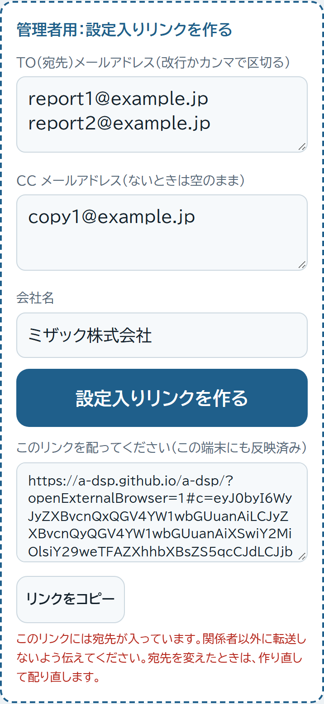

ブラウザで次のアドレスを開きます。最後の #admin を付けたときだけ、管理者用の欄が出ます。
https://a-dsp.github.io/a-dsp/#admin
TO と CC の欄に、それぞれメールアドレスを1行に1つ入れます（カンマ区切りでも可）。CCがないときは空のままでOKです。会社名を確認して 「設定入りリンクを作る」 を押します。
「リンクをコピー」を押して、LINE やメールで使う人に送ります。受け取った人がリンクを1回開けば、その端末に宛先が入ります。リンクの末尾に付く ?openExternalBrowser=1 は、LINE で開いたときに Safari／Chrome で開かせるための印です。QRコードにするときは、スマホ標準のカメラで読んでもらってください。
作った端末にも同じ宛先が入るので、自分のスマホで一度試してから配ると安心です。
同じ手順でリンクを作り直して、配り直します。新しいリンクを開いた端末は、新しい宛先に上書きされます。開いていない端末は古い宛先のままなので、全員に開いてもらうよう伝えてください。ホーム画面のアイコンは古い宛先を持ったままなので、アイコンを消して作り直すことも伝えてください。

https://a-dsp.github.io/a-dsp/）には宛先は入っていません。URLだけ知られても宛先は漏れません。#c= 以降）にも残ります。アドレス欄をコピーして人に送ると宛先も一緒に渡るので、ページを人に教えるときは https://a-dsp.github.io/a-dsp/ だけを伝えてください。ページは GitHub の a-dsp/a-dsp リポジトリにある index.html です。文面や項目を変えたいときは、Claude に「a-dspを直したい」と頼めば対応できます。